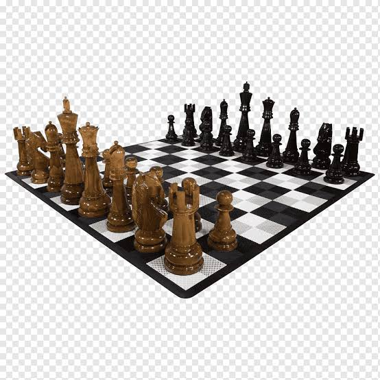

Left
Pengenalan Catur
Middle
Catur (bahasa Inggris: cheese) adalah permainan papan strategi dua orang yang dimainkan pada sebuah papan kotak-kotak yang terdiri dari 64 kotak, yang disusun dalam petak 8x8, yang terbagi sama rata (masing-masing 32 kotak) dalam kelompok warna putih dan hitam.
Dilansir Encyclopaedia Britannica (2015), catur sudah mulai ada pada abad ke-6 masehi. Catur pertama kali muncul di India selama masa pemerintahan raja-raja Gupta.
Pada abad ke-10, catur menyebar dari Asia ke Timur Tengah dan Eropa. Catur dikenal sebagai permainan perang yang disebut chaturanga. Chaturanga berasal dari Sansekerta untuk formasi pertempuran yang disebbut dalam cerita Mahabarata.
Catur Dilansir Encyclopaedia Britannica (2015), catur sudah mulai ada pada abad ke-6 masehi. Catur pertama kali muncul di India selama masa pemerintahan raja-raja Gupta.
Chaturanga berkembang di India pada abad ke-7 dan sebagai pendahulu awal catur modern. Karena memiliki da fitur utama yang ditemukan dalam semua varian catur. Pada abad ke-10, umat Islam membawa catur ke Afrika Utara, Sisilia, Spanyol, dan sejumlah negara-negara eropa lainnya, seperti Belanda, Italia, Irlandia, dan Inggris.

Right
Di wilayah timur dibawa oleh peziarah Budha, pedagang jalur sutra hingga sampai ke china.
Pada abad ke-11, catur datang ke Jepang dan Korea. Di Eropa catur datang melalaui Persia pada kekaisaran Bizantum dan terus mengalami perkembangan. Di Arab, catur menjadi permainan yang populer, bahkan diyakini sebagai favorit tiga khalifah.
Pada abad ke-15 peraturan dan teori catur mulai ditulis dalam sebuah buku yang bernama "Repeticion de amores y Arte de Ajedrez" yang ditulis oleh Luis Ramirez de Lucena.
Catur Masuk ke Nusantara atau Indonesia di bawah Kolonial belanda yang menjajahnya. Pada abad ke-19, perkembangan catur di Indonesia mulai terlihat.
Artikel Terkait Lainnya
- Olahraga Catur Bisa Turunkan Berat Badan, Percaya?
- Bidak Catur Tertua di Dunia Ditemukan di Yordania Selatan
- Daftar Grandmaster Catur Indonesia
- Kisah Wakil DPR RI yaitu GM Utut Adianto mulai dari bermain catur kayu hingga ikut percaturan politik di Indonesia
- Tentang GM Susanto Margaranto murid GM Utut Adianto
- Tentang Strategi, Taktik, DLL permainan Catur